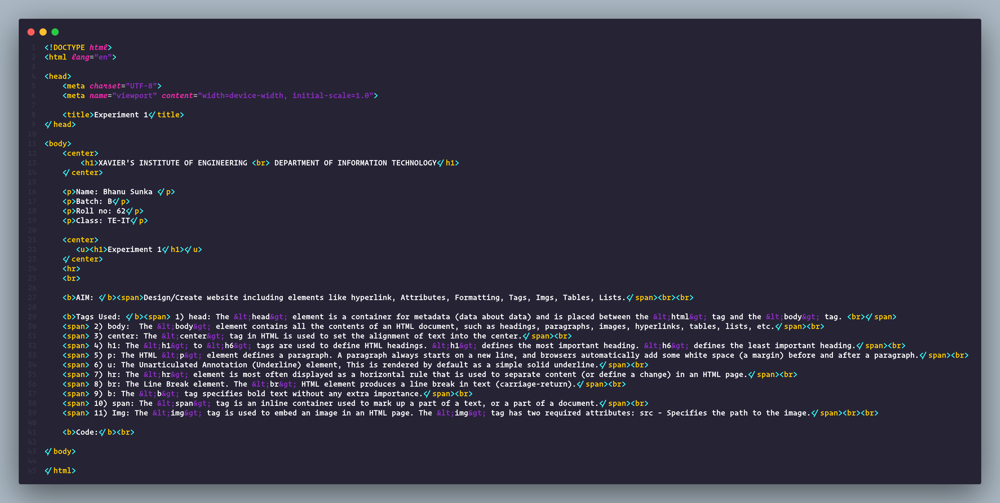
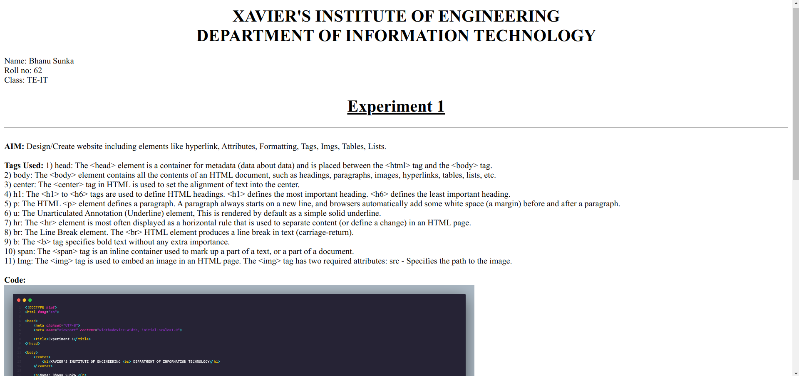

XAVIER'S INSTITUTE OF ENGINEERING
DEPARTMENT OF INFORMATION TECHNOLOGY
Name: Bhanu Sunka
Roll no: 62
Class: TE-IT
Experiment 1
AIM: Design/Create website including elements like hyperlink, Attributes, Formatting, Tags, Imgs, Tables, Lists.
Tags Used: 1) head: The <head> element is a container for metadata (data about data) and is placed between the <html> tag and the <body> tag.
2) body: The <body> element contains all the contents of an HTML document, such as headings, paragraphs, images, hyperlinks, tables, lists, etc.
3) center: The <center> tag in HTML is used to set the alignment of text into the center.
4) h1: The <h1> to <h6> tags are used to define HTML headings. <h1> defines the most important heading. <h6> defines the least important heading.
5) p: The HTML <p> element defines a paragraph. A paragraph always starts on a new line, and browsers automatically add some white space (a margin) before and after a paragraph.
6) u: The Unarticulated Annotation (Underline) element, This is rendered by default as a simple solid underline.
7) hr: The <hr> element is most often displayed as a horizontal rule that is used to separate content (or define a change) in an HTML page.
8) br: The Line Break element. The <br> HTML element produces a line break in text (carriage-return).
9) b: The <b> tag specifies bold text without any extra importance.
10) span: The <span> tag is an inline container used to mark up a part of a text, or a part of a document.
11) Img: The <img> tag is used to embed an image in an HTML page. The <img> tag has two required attributes: src - Specifies the path to the image.
12) article: The <article> HTML element represents a self-contained composition in a document, page, application, or site, which is intended to be independently distributable or reusable
Code:

Output:

| Student |
Rollno |
Age |
| Bhanu |
62 |
20 |
| Bunny |
17 |
19 |
| Baladitya |
32 |
14 |